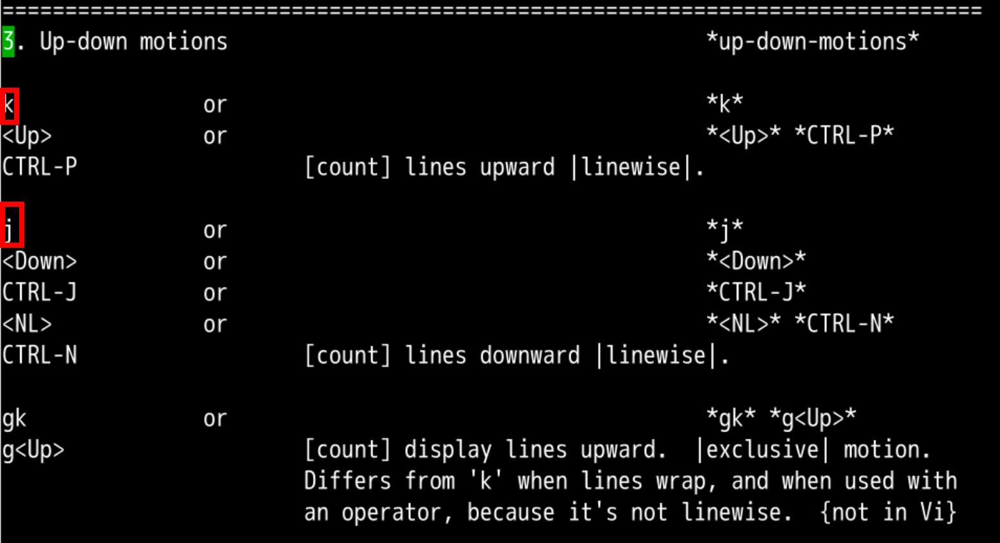
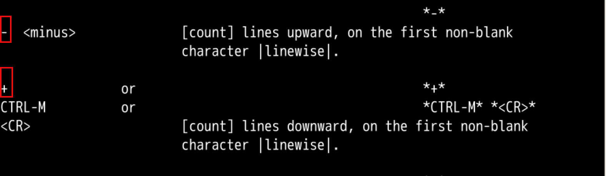
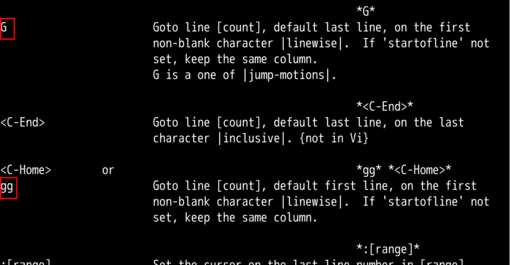
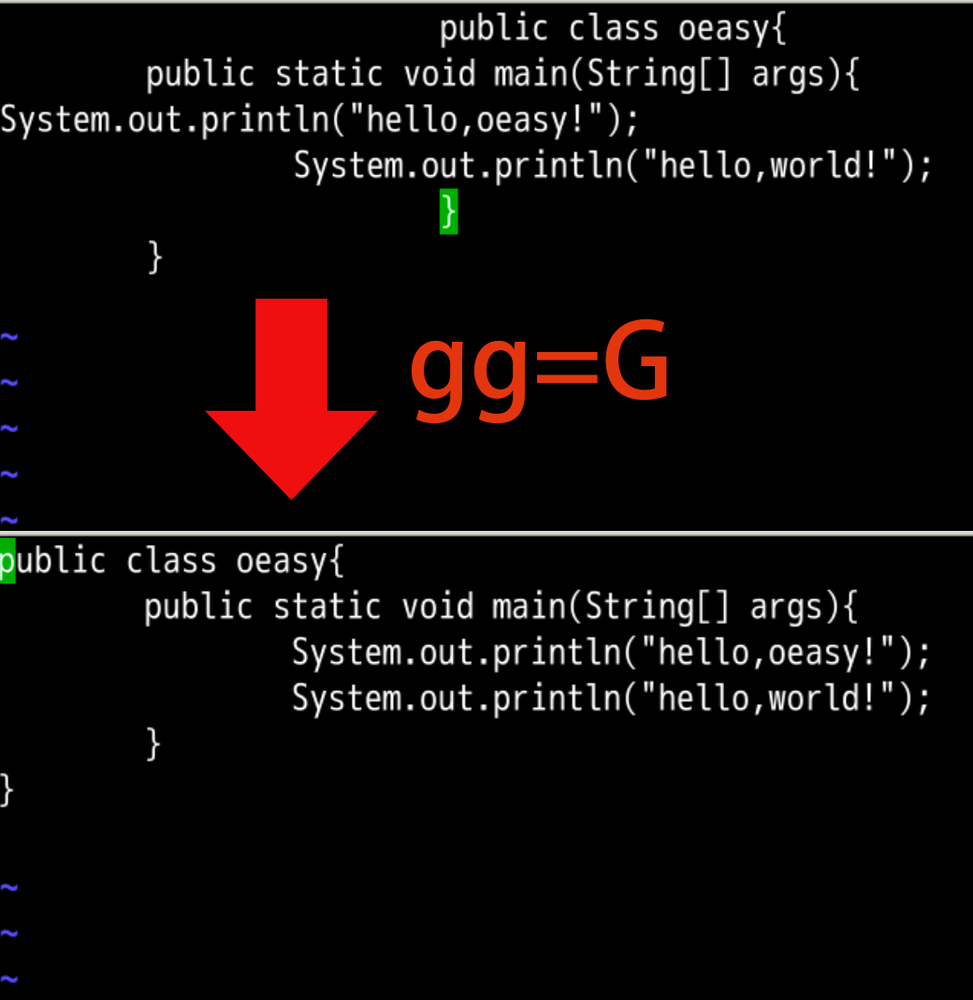

f 相关的是跳到前 跳到是 f后 跳到是 Ft 相关的是贴靠前 贴靠是 t后 贴靠是 T小写 相关的是 向前向前 跳跃是 f向前 贴靠是 t和 大写 相关的是 向后
向后 跳跃是 F向后 贴靠是 T和继续 查找方向 相关的是 ;、,
保持方向 是 ;改变方向 是 ,:set nocompatible 设置为不兼容 vivim的方式处理命令motion 的 左右移动 之后是 上下移动

plus 对应 + minus 对应 - 下 并且到行 首 非空字符上 并且到行 首 非空字符
首行尾行GroundGoG 直接到最后o 在下面一行插入Go 起来gg 就回开头
下 是 j👇上 是 k👆下 到行首非空字符 +上 到行首非空字符 -motion 都可以加上 [count] 来翻倍